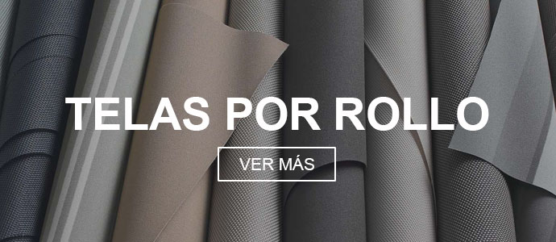
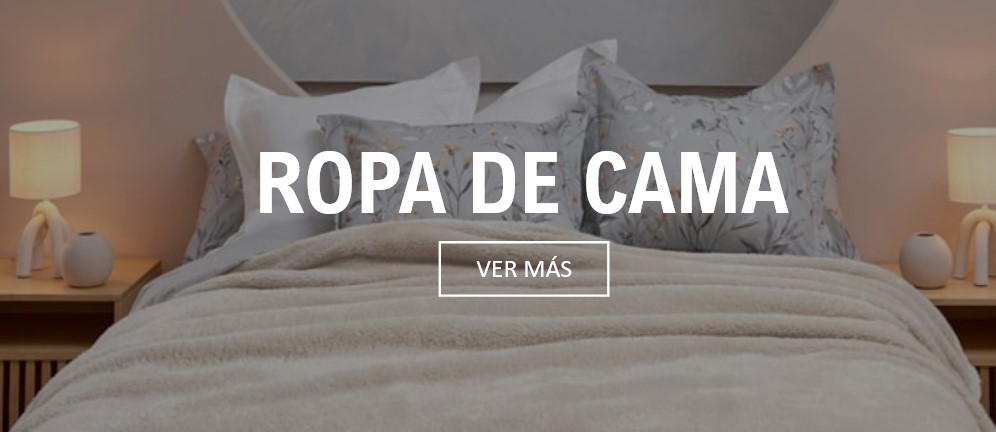
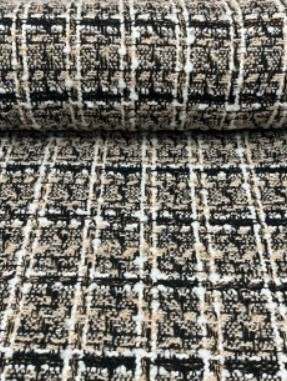
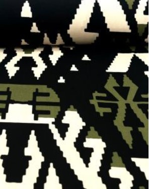
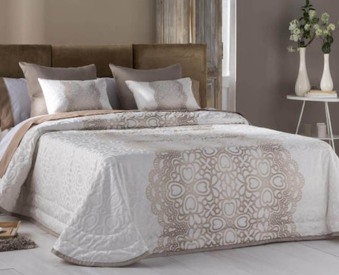
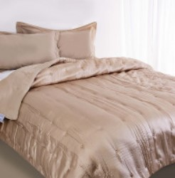
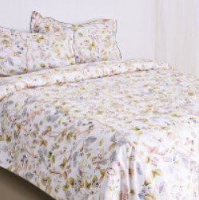

| Inicio | Productos | Empresa | Contáctanos |
|  |  |
Conoce algunos de nuestros productos...
TELAS
 |
 |
 |  |
 |
Retal de Tela Punto- Tricot London |
Tela Forro Extra Rosa Chicle |
Tela de Tapicería Arne – Antracita |
Tela Punto- Berta Ocre |
Viscosa Cassie |
| El retal de Tela Punto- Tricot London ofrece confort y elasticidad, ideal para proyectos creativos con un toque de elegancia y suavidad excepcional. | Tela ligera, fina y transpirable es perfecta para forros que buscan funcionalidad con estilo, elevando tus proyectos a piezas únicas y versátiles. | Tela caracterizada por su textura tipo forrado con tacto sólido aportan sofisticación, transformando tus espacios con distinción y funcionalidad. | La tela Punto- Berta Ocre su textura de grosor medio, tacto suave y acabado satinado la convierten en la elección perfecta para proyectos creativos y modernos. Transforma tus creaciones con estilo y comodidad. | La de esta tela es de textura de grosor medio ofrece un tacto cálido, ideal para prendas cómodas y frescas. Descubre la armonía entre estilo y comodidad con la Viscosa Cassie. |
| Compuesta por: 80% poliéster, 15% viscosa y 5% elastán. | Compuesta por: 65% acetato y 35% viscosa. | Compuesta por: 75% poliéster y 25% ramio. | Compuesta por: 80% poliéster, 13% poliamida, 7% elastán. | Compuesta por: 80% poliéster, 20% poliamida. |
Gramaje: 300 gr/mL |
Gramaje: 82 gr. | Gramaje: 120 gr. | Gramaje: 90 gr. | Gramaje: 80 gr. |
ROPA DE CAMA
|  |  |  |  |
 |
Cobija Algodon Archer |
Cobertor VibeSleep Dream Wave |
Duvet Diamond |
Duvet de Pluma de Ganso |
Sábana VibeSleep Luxe Touch |
|
Sumérgete en la suavidad y elegancia de la Cobija Archer. Confeccionada en 100% algodón, ofrece confort excepcional y estilo a tu hogar en tamaños Queen y King. |
Descubre en el lujo con el Cobertor VibeSleep Dream Wave, 100% poliéster de 90 gramos para una experiencia suave. Mantén la frescura y elegancia en tu dormitorio con facilidad de lavado. |
Experimenta con el Duvet Diamond, su suavidad excepcional crea un refugio acogedor para un descanso reconfortante. Disponible en Full, Queen y King, transformará tu habitación con confort y estilo inigualables. |
Duvet Diamond, ofrece su suavidad excepcional crea un refugio acogedor para un descanso reconfortante. Disponible en Full, Queen y King, transformará tu habitación con confort y estilo inigualables. |
Este tipo de sábana es confeccionada en una mezcla única de poliéster y algodón de alta calidad para un ajuste impecable y suavidad incomparable. Compatible con colchones de hasta 42 cm, brinda una experiencia de descanso excepcional. |